주변 맛집 탐색
현재 위치 2km 안의 식당과 카테고리별 1km 후보를 지도와 목록으로 확인합니다.
9년 차 백엔드 개발자 프로젝트 포트폴리오
BACKEND ENGINEERING · CASE STUDIES
백엔드 개발자
Java·Kotlin과 Spring을 중심으로 데이터 흐름, 외부 연동, 장애 대응과 AI 응용 서비스를 개발합니다.
01
페이지 구성
각 프로젝트에서 실제로 구현한 내용과 확인할 수 있는 결과를 아래 순서로 보여드립니다.
누구의 어떤 문제를 해결하기 위해 만든 서비스인지 설명합니다.
사용자가 실제로 이용하는 기능과 흐름을 보여드립니다.
화면, 서버, 데이터베이스와 외부 서비스의 역할을 나눠 설명합니다.
구현 중 만난 문제와 그 문제가 서비스에 주는 영향을 먼저 짚습니다.
선택한 방법, 검증 과정과 구현 결과를 구체적으로 정리합니다.
03
어떤 프로젝트인가
현재 위치 주변의 식당을 찾고, 개인 또는 그룹이 저장한 후보 중 한 곳을 무작위로 골라주는 반응형 웹 서비스입니다.
사용자 문제점심이나 모임 때 후보는 많지만 결정을 내리기 어렵습니다.
해결 방식탐색·저장·공유·무작위 선택을 하나의 흐름으로 연결했습니다.
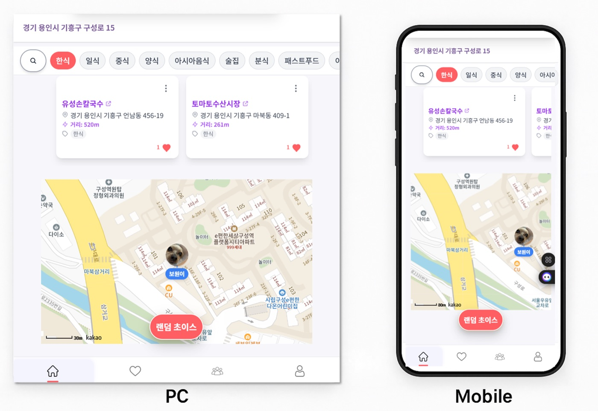
Kotlin · Spring Boot · JPA · MariaDB · React · TypeScript · Docker · Kakao API
04
사용자가 이용하는 기능
현재 위치 2km 안의 식당과 카테고리별 1km 후보를 지도와 목록으로 확인합니다.
현재 검색 결과나 저장한 후보 중 한 곳을 무작위로 골라 결정 시간을 줄입니다.
관심 식당을 저장하고 전체 또는 지역별 후보에서 다시 선택할 수 있습니다.
그룹별 후보를 관리하고 카카오톡 초대로 멤버와 식당을 공유합니다.
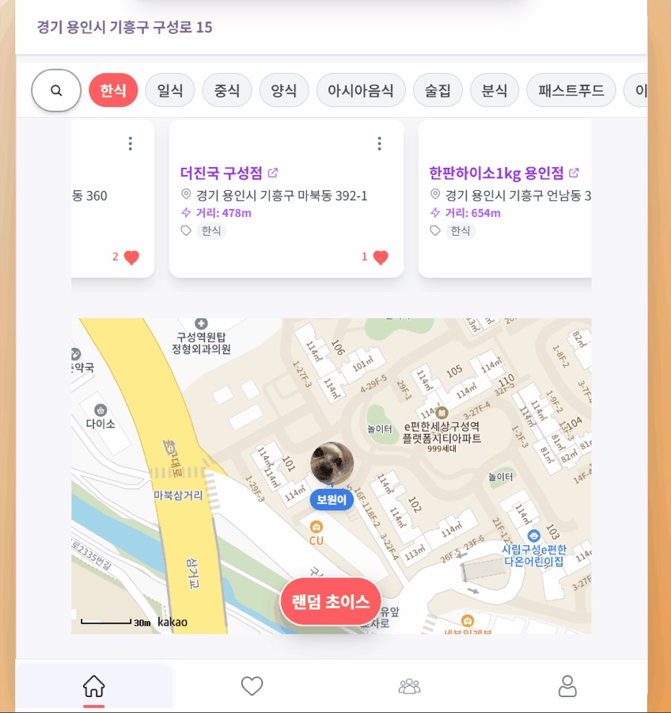
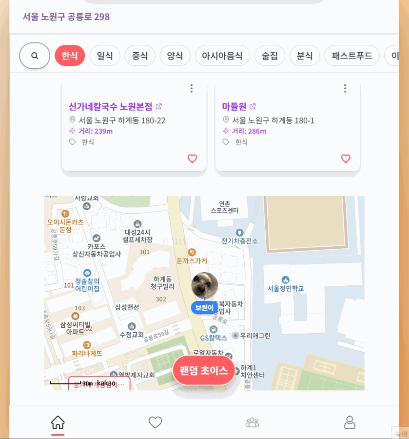
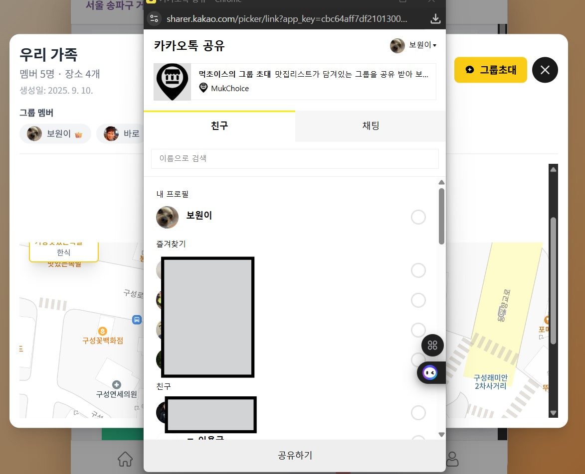
05
프로젝트를 어떻게 구성했는가
React 화면이 사용자 선택을 관리하고, Spring API가 인증과 데이터 규칙을 처리하며, Kakao API는 로그인·장소·공유 기능을 제공합니다.
지도·카드·모달과 화면 상태
인증·사용자·찜·그룹 규칙
사용자·장소·그룹 관계 저장
인가 코드를 토큰으로 교환하고 사용자 정보를 확인한 뒤 서비스용 JWT를 발급합니다.
현재 좌표와 카테고리를 기준으로 식당 후보를 받아 지도와 목록에 표시합니다.
서버에서 받은 데이터와 화면에서만 필요한 상태의 책임을 분리했습니다.
프런트엔드와 백엔드를 분리해 빌드하고 같은 배포 흐름으로 운영했습니다.
06
어려웠던 점 01
검색 결과는 외부에서 받은 임시 정보이므로 장소 ID나 좌표가 틀리면 찜과 그룹 데이터까지 잘못된 장소를 가리킬 수 있습니다.
사용자가 살펴보기만 한 모든 장소를 데이터베이스에 넣지 않았습니다.
외부 응답을 무조건 믿으면 서로 다른 장소가 같은 장소로 저장될 수 있습니다.
장소 URL, 5m 이내 좌표 검색과 장소 ID를 교차 확인하고 법정동 정보를 변환했습니다.
검증된 장소와 찜 또는 그룹 연결을 하나의 트랜잭션 안에서 처리했습니다.
07
어려웠던 점 02
각 식당마다 전체 찜 수와 내 찜 여부를 따로 조회하면 목록 크기만큼 데이터베이스 요청이 늘어납니다.
화면 응답을 조립하는 과정에서 같은 형태의 조회가 반복될 수 있었습니다.
장소 ID 목록을 전달해 전체 찜 수와 현재 사용자의 찜 여부를 함께 계산했습니다.
집계 결과를 장소 ID 기준 Map으로 만든 뒤 외부 검색 결과와 합쳤습니다.
후보마다 반복 조회하지 않고 한 번의 묶음 조회로 화면 값을 구성했습니다.
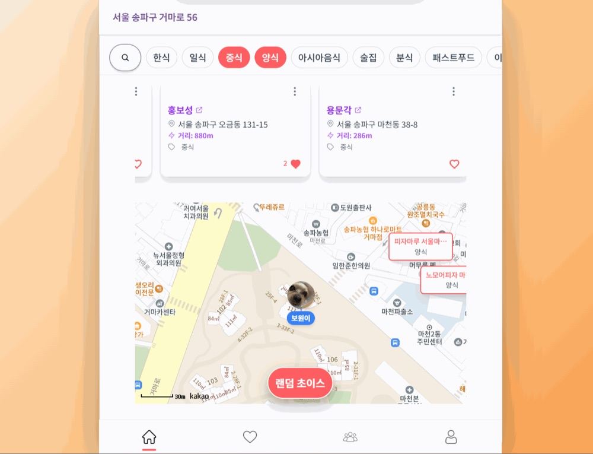
08
그룹 기능에서 지킨 규칙
개인 선택 기능에서 시작해 여러 사용자가 후보를 공유하고 함께 결정하는 서비스 흐름까지 완성했습니다.
09
어떤 프로젝트인가
공공데이터의 유기동물 현황을 확인하고, 회원과 반려동물 프로필·게시글·댓글·좋아요를 통해 정보를 나누는 풀스택 웹 서비스입니다.
서비스 목적보호가 필요한 동물의 정보를 알리고 반려동물 경험을 나누는 공간을 만들었습니다.
개발 범위공공 API, 회원 기능, 커뮤니티와 이미지 저장을 하나의 서비스로 연결했습니다.
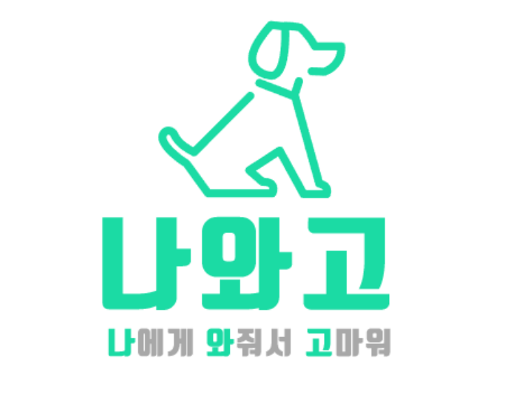
Java · Spring Boot · JPA · QueryDSL · MyBatis · Vue 2 · MariaDB · AWS S3
10
사용자가 이용하는 기능
공공 API의 보호동물 현황을 받아 화면에 제공합니다.
회원 인증, 정보 수정과 프로필 이미지를 관리합니다.
반려동물 정보와 사진을 등록·조회·수정합니다.
게시글·댓글·좋아요로 정보와 일상을 공유합니다.
파일은 S3에 저장하고 데이터베이스에는 파일 주소를 관리합니다.
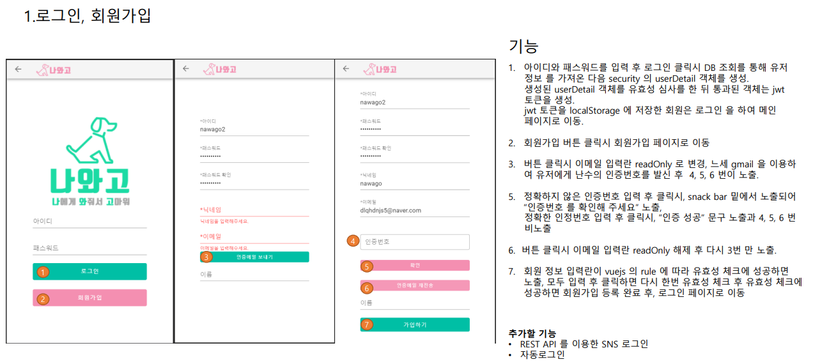
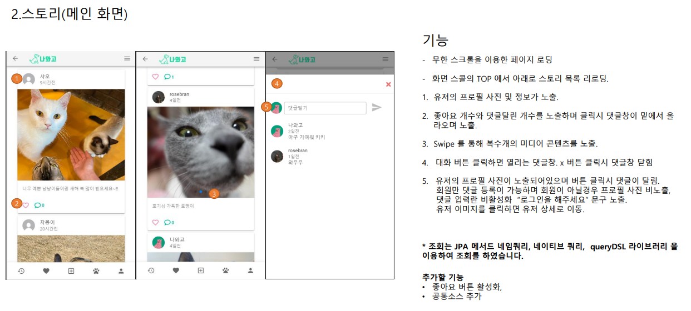
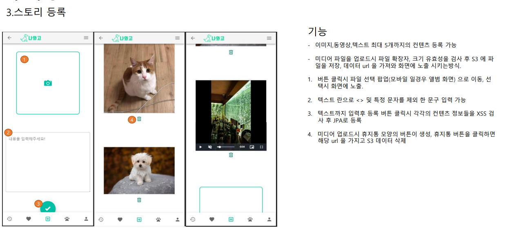
11
프로젝트를 어떻게 구성했는가
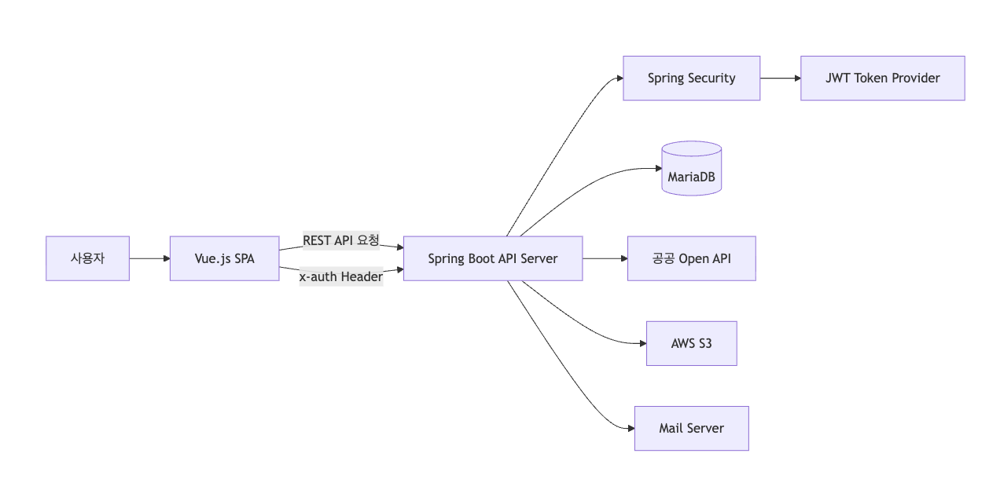
회원·반려동물·게시글·댓글·좋아요 같은 관계 데이터를 저장합니다.
외부 XML 응답을 내부 응답 형식으로 바꿔 유기동물 현황을 제공합니다.
이미지 파일과 회원 안내처럼 데이터베이스 밖의 작업을 분리했습니다.
12
어려웠던 점 01
게시글 하나에는 이미지·댓글·좋아요가 연결됩니다. 일부만 처리되면 화면에는 지워진 게시글의 데이터가 남을 수 있습니다.
첨부 이미지와 게시글을 연결하려면 게시글 저장 후 생성된 키가 필요했습니다.
저장이나 삭제가 중간에 멈추면 연결되지 않은 첨부와 댓글이 남을 수 있습니다.
게시글 저장 후 키를 첨부에 넣고, 삭제는 좋아요·첨부·댓글·게시글 순으로 처리했습니다.
관계형 데이터의 생성과 삭제를 같은 트랜잭션 안에서 끝내도록 구성했습니다.
이미지 파일은 S3에 저장하고 데이터베이스에는 파일 주소와 게시글 관계만 보관했습니다.
13
어려웠던 점 02
게시글 목록에는 본문뿐 아니라 댓글 수·좋아요 수·현재 사용자의 좋아요 여부가 함께 필요했습니다.
엔티티 전체가 아니라 피드에서 필요한 값만 선택해 응답 형식으로 조회했습니다.
목록을 받은 뒤 반복 요청하지 않도록 집계 값을 같은 조회에서 만들었습니다.
현재 사용자 기준의 좋아요 여부를 함께 반환해 화면의 추가 요청을 줄였습니다.
시작 위치와 조회 개수를 지정해 한 번에 읽는 게시글 수를 제한했습니다.
14
직접 맡은 범위
Spring API를 중심으로 Vue 화면, 데이터베이스, 공공 API와 AWS 인프라를 연결하고, 배포 후 문제는 로그를 통해 추적했습니다.
회원·반려동물·커뮤니티 API, JWT 구성 요소와 쓰기 트랜잭션을 구현했습니다.
로그인, 동물 정보, 게시글·댓글과 이미지 업로드 화면을 연결했습니다.
EC2·RDS·S3 환경과 공공 API, 파일 저장, 메일 발송을 구성했습니다.
공개 후 예상하지 못한 결함이 발생했을 때 핵심 로그를 추가해 실패 위치를 좁혔습니다.
공공데이터 조회와 사용자 커뮤니티가 함께 동작하는 풀스택 서비스를 직접 배포하고 운영 흐름까지 경험했습니다.
15
AI AGENT 활용요구사항·제약·검증 중심의 개발 프로세스
어떤 프로젝트인가
시장·공시·뉴스 데이터를 수집해 AI가 매매 의견을 만들고, 손실률·유동성·보유 비중 조건을 통과한 경우에만 주문으로 연결합니다.
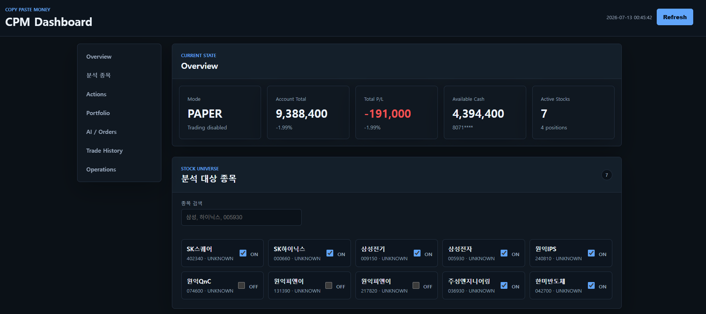
Java 21 · Spring Boot · MyBatis · MySQL · WebClient · Scheduler · OpenAI
16
백엔드가 수행하는 일
가격·거래량·수급·기술 지표와 분석 대상 종목을 저장합니다.
DART 공시·재무 정보와 뉴스 요약·감성을 함께 관리합니다.
매수·매도·보유 의견과 신뢰도, 근거를 정해진 형식으로 받습니다.
손익비·손실률·유동성·종목 비중을 서버 정책으로 확인합니다.
계좌 잔고, 주문 실행과 저장 영역을 실행 방식별로 나눴습니다.
AI 판단·차단 사유·주문·포지션과 스케줄러 상태를 조회합니다.
17
프로젝트를 어떻게 구성했는가
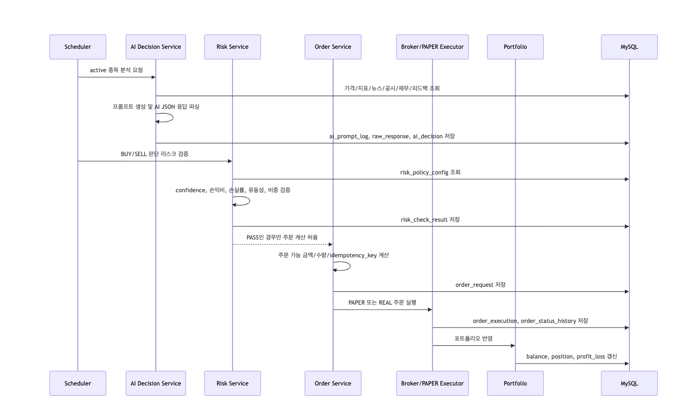
입력 데이터를 바탕으로 매수·매도·보유 의견과 신뢰도, 근거를 생성합니다.
응답 형식을 검사하고 위험 조건·실행 방식·계좌 상태를 확인해 주문 여부를 결정합니다.
프롬프트, AI 원문, 해석 결과, 차단 사유와 주문 상태를 단계별로 남깁니다.
모델 문제인지 서버 정책에 의해 차단된 것인지 실행 기록에서 구분할 수 있습니다.
18
가장 어려웠던 설계
증권사 요청이 시간 초과되면 주문이 실패한 것인지, 체결됐지만 응답만 받지 못한 것인지 바로 판단하기 어렵습니다.
응답을 받지 못했다는 이유로 재주문하면 실제 계좌에 중복 체결이 생길 수 있습니다.
기본 실행 방식을 모의투자로 두고 실주문은 별도 활성 조건을 통과하게 했습니다.
외부 호출 전에 준비 상태와 실행 이력을 남기고 짧은 시간의 중복 요청을 막았습니다.
바로 다시 주문하지 않고 증권사 체결 여부를 먼저 확인하도록 흐름을 나눴습니다.
모의투자가상 잔고·체결·포지션만 사용
실계좌별도 활성화와 계좌 동기화 후 실행
19
개발 과정에서 AI Agent를 사용한 방법
구현 전체를 맡기지 않고 작업 범위와 금지 조건을 먼저 정한 뒤, 제한된 맥락과 작은 작업 단위로 활용했습니다.
요구사항을 자연어로 정의하고, 구현 전 plan/ 문서에 작업 범위와 영향도를 남겼습니다.
필요한 코드와 규칙만 제공하고 DB 스키마 임의 변경·민감정보 하드코딩 금지, PAPER/REAL 테이블 분리 같은 제약을 명시했습니다.
데이터 수집, AI 판단, 리스크 검증, 주문 생성, 체결 동기화와 피드백 저장으로 나눠 구현했습니다.
생성 코드를 로그, DB 상태, 테스트와 실제 API 응답을 기준으로 직접 검증했습니다.
이상 동작은 원인을 먼저 추적하고 confidence, risk policy, 유동성, 손익비와 주문 수량을 순서대로 확인해 반복 개선했습니다.
아키텍처 결정, 코드 반영 여부와 최종 품질은 직접 판단하고 책임졌습니다.
20
실제로 해결한 데이터 문제
장중에 아직 확정되지 않은 일봉이 최신 값으로 저장됐고, 같은 날짜를 건너뛰는 저장 방식 때문에 장 마감 후 정상 값으로 바뀌지 않았습니다.
시가·고가·저가·종가가 같고 거래량이 작은 임시 값 때문에 매매 의견이 보류됐습니다.
미확정 값이 먼저 들어온 뒤 같은 날짜의 확정 값이 와도 기존 행을 교체하지 못했습니다.
장 마감 전 당일 일봉을 제외하고, 확정 값은 같은 날짜의 기존 행을 갱신하도록 바꿨습니다.
저장 단계뿐 아니라 프롬프트를 만들 때도 비정상 최신 캔들을 제외했습니다.
21
AI 코드 분석 서비스MCP 기반 읽기·쓰기 권한 통제
어떤 프로젝트인가
MCP로 Pull Request의 변경 내용을 가져오고 OpenAI로 문제를 분석한 뒤, 사용자가 확인한 결과를 GitHub 리뷰로 등록합니다.
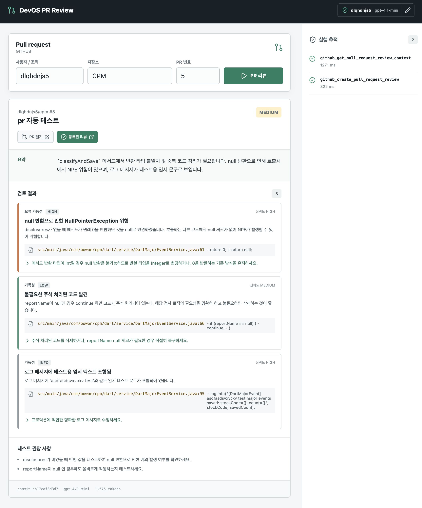
Kotlin · Java 21 · Spring Boot · MCP · OpenAI Responses API · React
22
리뷰가 만들어지는 순서
OpenAI 모델 사용 가능 여부와 GitHub 토큰·계정을 확인합니다.
저장소와 PR 번호를 입력해 분석할 변경 범위를 정합니다.
MCP 읽기 도구로 PR 정보와 제한된 크기의 diff를 가져옵니다.
버그·보안·성능·트랜잭션과 테스트 누락을 AI가 분석합니다.
파일 위치, 심각도, 근거와 개선안을 등록 전에 확인합니다.
최신 커밋을 확인하고 같은 변경의 반복 등록을 막습니다.
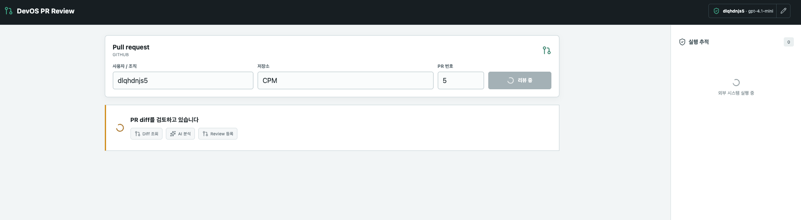
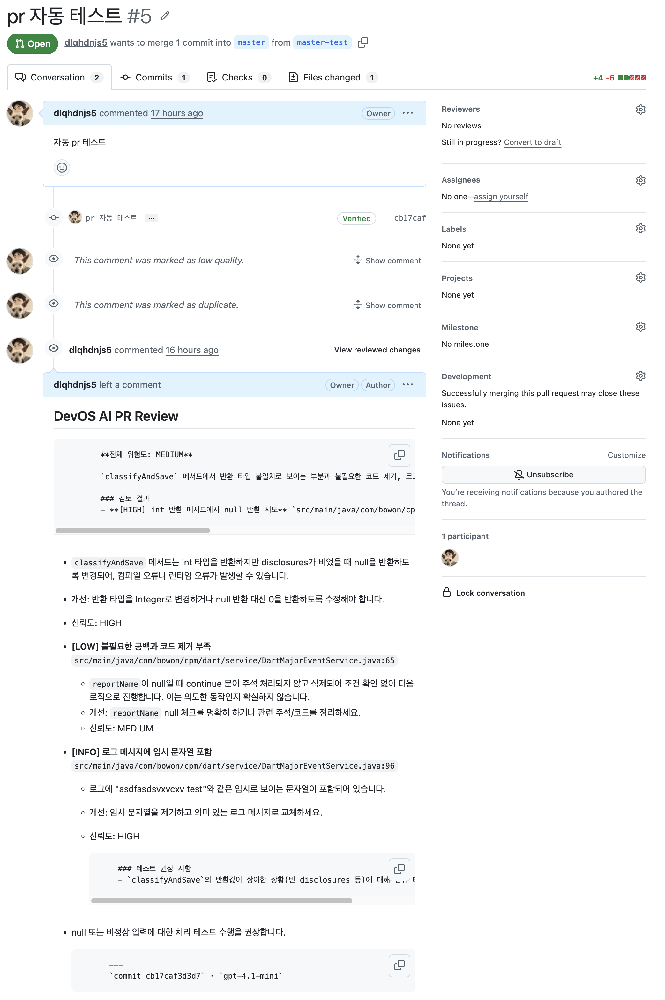
23
프로젝트를 어떻게 구성했는가
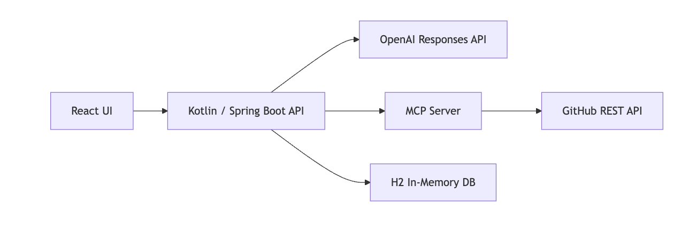
연동 정보, 리뷰 대상, 분석 결과와 등록 상태를 사용자에게 보여줍니다.
분석 범위를 만들고 AI 결과의 형식을 검사하며 실행 이력을 관리합니다.
PR 읽기와 리뷰 쓰기를 분리하고, 승인된 요청만 GitHub API로 전달합니다.
24
프로젝트 내부에서 AI를 사용하는 방식
AI에는 제한된 PR 변경 내용만 전달하고, 분석 결과의 형식과 외부 쓰기 권한은 서버가 통제합니다.
최대 40개 파일, 파일당 1.2만 자, 전체 8만 자 안에서 분석할 diff를 구성합니다.
코드와 설명에 포함된 문장은 실행 지시가 아니라 분석 대상으로만 취급합니다.
최대 20개 지적을 고정된 형식으로 받고 파일·라인·근거 같은 필수 항목을 검사합니다.
AI는 분석만 수행하며, GitHub 리뷰 등록은 최신 상태와 서명을 확인한 서버가 실행합니다.
AI가 MCP 도구를 직접 선택하거나 GitHub에 쓰지 못하도록 읽기·분석·등록의 경계를 분리했습니다.
25
가장 중요한 안정성 판단
GitHub 조회 실패는 다시 시도해도 부작용이 없지만, 리뷰 등록을 자동 재시도하면 같은 내용이 여러 번 게시될 수 있습니다.
429와 5xx 응답처럼 잠시 뒤 회복될 수 있는 조회 요청만 간격을 두고 다시 시도했습니다.
응답을 받지 못해도 같은 리뷰를 곧바로 다시 게시하지 않도록 자동 재시도를 막았습니다.
같은 커밋의 재요청은 저장된 분석과 게시 결과를 반환하도록 했습니다.
토큰은 요청 헤더로만 전달하고, 만료 시간이 있는 HMAC 서명을 검증한 뒤 등록했습니다.
26
화면에서 확인한 결과
27
1인 프로젝트에서 맡은 범위
AI 결과를 그대로 신뢰하지 않고 입력 범위, 출력 형식과 외부 행동 권한을 서버 코드와 테스트로 통제했습니다.
28
MukChoice · Nawago · CPM · DevOS PR Review
이보원 · 백엔드 개발자